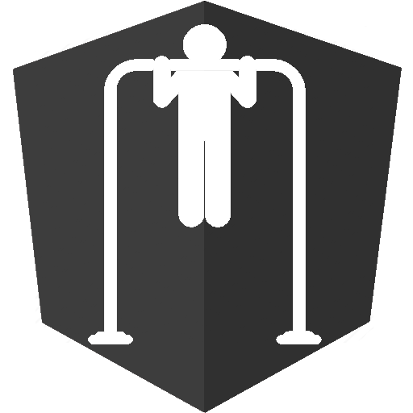

<mat-sidenav-container class="sidenav-container">
  <mat-sidenav-content>
    <mat-toolbar color="primary">
      <a routerLink="/"></a>
      <span class="nav-spacer"></span>
      <span><a routerLink="/" style="font-style: normal; text-decoration: none; color: white;">Calisthen-U</a></span>
      <span class="nav-spacer"></span>
      <button  mat-icon-button class="account-icon" (click)="goToProfile()" routerLinkActive="active">
        <i style="font-size: 32px;" class="far fa-user-circle"></i>
      </button>
    </mat-toolbar>
    <router-outlet></router-outlet>
    <!-- <app-dashboard></app-dashboard> -->
    <!-- <app-map></app-map> -->
  </mat-sidenav-content>
</mat-sidenav-container>